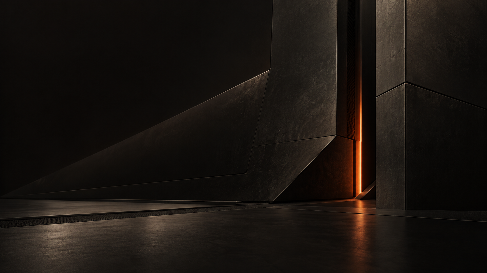
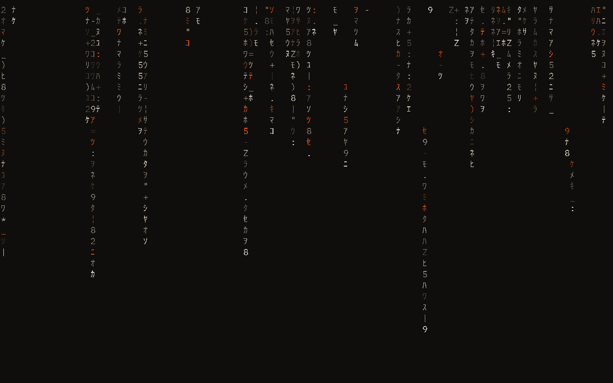
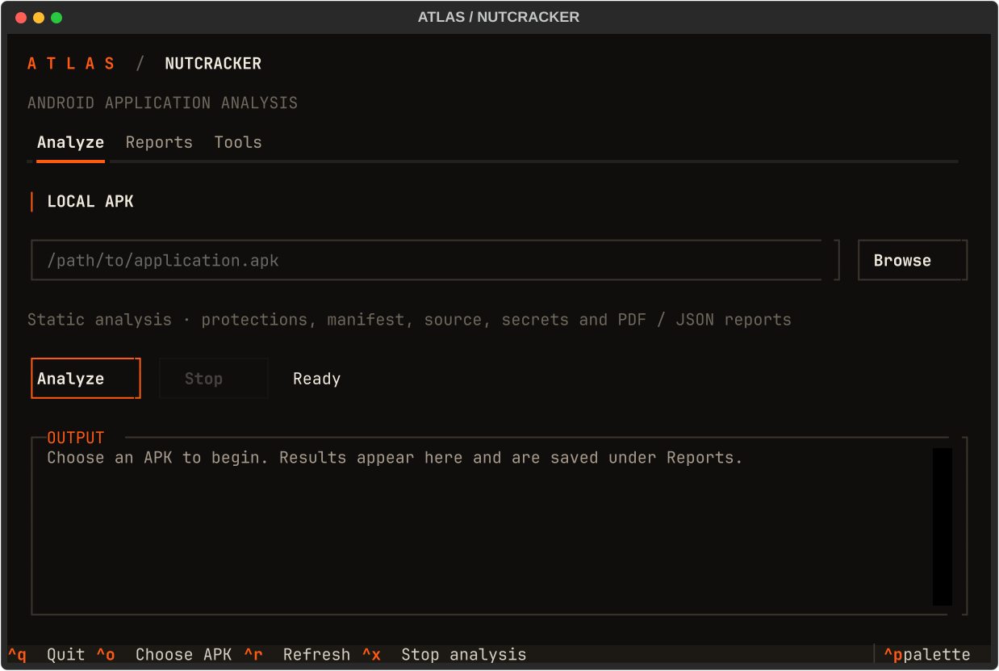

Boot & login
The ATLAS wordmark, carbon backgrounds, and warm controls across Limine, Plymouth, and SDDM. Installed as an optional component.

Carbon surfaces. Warm ivory text. Signal orange.
ATLAS brings a shared visual language to your whole setup: boot and login, windows and lock screen, terminals and everyday applications. Square edges, fine borders, and just enough orange to show what matters.

Select a background to preview it. Explore the collection ↗
01 / The whole environment
The same materials, typography, and accent colors carry through the system, with coordinated styling for the tools you use each day.
The ATLAS wordmark, carbon backgrounds, and warm controls across Limine, Plymouth, and SDDM. Installed as an optional component.
Square Hyprland windows, thin orange focus borders, coordinated shell panels, and a Matrix lock screen.
IBM Plex typography, tmux tabs, Starship prompts, Yazi previews, and matching colors for browsers, monitors, and development tools.
02 / In everyday use
A quiet desktop, Python in Neovim, and files you can browse visually. The editor shares the ATLAS palette, with warm syntax colors against carbon surfaces. These captures show the actual interface in use.


Choose Classic or Terminal under ATLAS → Lock screen. The minimal style pairs the ATLAS wordmark with a small borderless password prompt and a blinking grey chevron.
Real lock surface captured in the validation VM.

Nutcracker is an optional APK analysis interface with reports, diagnostics, and its existing CLI. This image is a rendered Textual preview; install separately with atlas-theme nutcracker-install --with-tools. Installation and removal ↗
The tmux side panel brings live tunnel status, dVPN / Mixnet mode selection, and settings into the ATLAS workspace. It requires the Nym daemon and a matching CLI.

Open with Ctrl+Space, then n. Panel controls and dependencies ↗
03 / Get started
Repository access required. The ATLAS source repository and linked technical guides are currently private. The installation commands below are for users who have access.
Version 1.0.0-rc5. Tested against Omarchy 4.0.4-1, Hyprland's Lua configuration, and the Quickshell-based Omarchy shell. See compatibility and release validation.
Clone the repository and run the one-command installer as your normal user:
git clone https://github.com/xrefor/omarchy-atlas-theme.git && cd omarchy-atlas-theme && ./install.shThe script checks core dependencies, installs every user component, and activates
ATLAS. It does not install applications or change boot configuration. Preview
the same operation with ./install.sh --dry-run. If you downloaded a release
archive, extract it and run ./install.sh inside the extracted directory.
Open a new terminal and restart Zen after activation. Log out and back in to propagate the font environment consistently. See the dependency list if the prerequisite check reports a missing command. Optional application integrations, including Yazi, become active when those applications are installed.
The extended shell uses the recipient's existing idle timeouts. Its Matrix screensaver runs inside the secure lock surface, so it locks at the earlier of screensaver and lock timeouts. See authentication and shell.
The boot component is included in the same archive and installed explicitly:
sudo python3 install.py boot --dry-run
sudo python3 install.py boot
# After rebooting and checking the boot/login screens:
sudo python3 install.py boot-confirmIt backs up the recipient's current EFI partition and changed system files,
adds the ATLAS assets, updates appearance settings, and rebuilds boot images
when required. It preserves disk identifiers, boot entries, kernel parameters,
timeouts, default entry, and authentication policies. A private transaction
backup is retained until boot-confirm. Interrupted transactions are handled
with boot-recover; see the recovery conditions in the boot guide. It never
copies a boot image from the creator's machine.
Select individual surfaces with --limine, --plymouth, or --sddm.
See boot installation and recovery for supported partition
layouts, enrollment handling, and rollback.
# Standard desktop colors, artwork and windows only:
python3 install.py --components theme
# Desktop fonts/toolkits/terminals and application workspace:
python3 install.py --components theme,desktop,apps
# Lock screen, Matrix rain, Polkit dialog and display widget:
python3 install.py --components shell
# Core network-command colors:
python3 install.py --components cli
# Optional CLI skins, selected explicitly:
python3 install.py --components cli --cli-groups cli-tcpdump,cli-metasploit,cli-shodan,cli-codexdesktop and shell also install the theme. Components share one installation
record, so later installation adds to the same backup baseline. The full archive
always contains every component regardless of the selected installation.
Omarchy's normal repository theme installer can load the root palette/artwork. Omarchy restricts executable theme files from downloaded repositories, so the complete experience uses the local installer above.
04 / Reference
Component coverage, everyday controls, palette management, and recovery.
| Surface | ATLAS treatment |
|---|---|
| Limine | ATLAS branding, carbon background, matching terminal colors |
| Plymouth | Original angular ATLAS wordmark, refined lock/password tile, progress line |
| SDDM | Matching logo, carbon login surface and warm password controls |
| Hyprland | Square windows, 1px focus borders, no shadows; desktop component adds 87% window opacity |
| Omarchy shell | Thin neutral outlines, orange focus, opaque panels; existing bar widgets and positions retained |
| Lock / authentication | Matrix rain, ATLAS tile and native Omarchy PAM/Polkit backend |
| Wallpapers | ATLAS Boot, ATLAS Vault, Ember Seam, Thermal Horizon, Cinder Array, Umbra Core, Ember Causeway, Obsidian Fold |
| Fonts / GTK | IBM Plex Mono and Sans, GTK3/GTK4 colors, Yaru orange icons |
| Terminals | Foot, Ghostty, Kitty and Alacritty preferences; palette generated by Omarchy |
| NymVPN panel | Live ATLAS tunnel dashboard, dVPN/Mixnet mode and settings menus; optional Nym installation |
| tmux / Starship | Persistent ATLAS header, tabs, full directory path and compact Git status |
| Yazi | Native colors, file markers, bounded image previews and removable-drive menu |
| Zen | Browser chrome and browser-owned internal pages; native profile discovery |
| Spotify terminal player | Selection, playback, lyrics, border and progress colors |
| btop / LazyGit / Lazydocker | Native palette and panel styling |
| Bash / eza / ls / fzf / jq | Coordinated listing, search and data colors |
| Network tools / Metasploit / Shodan | Optional presentation wrappers and native console prompt |
| Codex | Native ATLAS syntax theme asset; select through the client's theme controls |
| Other Omarchy apps | Standard Omarchy generation from the shared palette, including Neovim, Chromium, Obsidian and supported AI clients |
The proprietary graphical Spotify client, website content, and application binaries are not modified. Wifite's visual adapter is included as reference source, with its version and installation boundary documented; no machine-bound root launcher is distributed. See CLI coverage.
| Shortcut | Action |
|---|---|
| Super+Shift+F | Yazi |
| Super+Shift+Alt+M | Spotify terminal player |
| Ctrl+Space, then F | Files tab |
| Ctrl+Space, then M | Monitoring pane on wide terminals, tab on narrow terminals |
| Ctrl+Space, then S | Music tab |
| Ctrl+Space, then N | NymVPN panel (requires Nym daemon and matching CLI) |
| Ctrl+Space, then I | Directory summary |
| Alt+1 / Alt+2 / … | Switch terminal tabs |
| Ctrl+B | Alternative tmux prefix |
Press the prefix, release it, then press the lowercase letter. In Yazi, M or g m opens Drives. The drive menu uses UDisks/Polkit for mount and eject actions.
The palette lives in ~/.config/omarchy/themes/atlas/colors.toml after installation.
Apply changes with omarchy theme set atlas. The application hook reads the
active resolved Omarchy palette, so it also follows other themes.
atlas-theme sync # regenerate managed application colors
atlas-theme check # report drift; exit nonzero if regeneration is needed
atlas-theme doctor --all # check dependenciesTemplates live in components/apps/templates/ and components/desktop/themed/.
The installed runtime is self-contained in ~/.local/share/atlas/; the extracted
archive can be removed after installation. Manual edits to managed files stop
updates/removal until reconciled, rather than being silently overwritten.
Select a different Omarchy theme before restoring user files:
omarchy theme set "Tokyo Night"
atlas-theme restore --dry-run
atlas-theme restoreUser originals and installed snapshots are recorded privately under
~/.local/state/atlas-bundle/. Original file modes and symlinks are restored;
files introduced by the bundle are removed. This directory is local state and
must never be included in a shared archive. An interrupted user installation
can be rolled back with atlas-theme recover or python3 install.py recover.
For boot removal, use the extracted bundle:
sudo python3 install.py boot-restore --dry-run
sudo python3 install.py boot-restoreBoot removal rebuilds the current installed kernel with the restored appearance. It does not downgrade to the boot image saved during the original installation.
python3 tools/check.py
python3 tools/build.pyThe build writes dist/atlas-1.0.0-rc5.tar.gz and a SHA-256 sidecar. The archive
contains a per-file hash manifest, source, artwork, component installers, tests,
licenses and documentation. It excludes caches, backups, account profiles,
application logs, screenshots of personal content and hardware configuration.
See release validation, credits, and
renaming/migration. MIT license applies to project source;
upstream notices are retained in LICENSES/.
ATLAS is the new name for the earlier Blackburn customization.
{kind=link}
{kind=link}
{kind=link}
{kind=link}